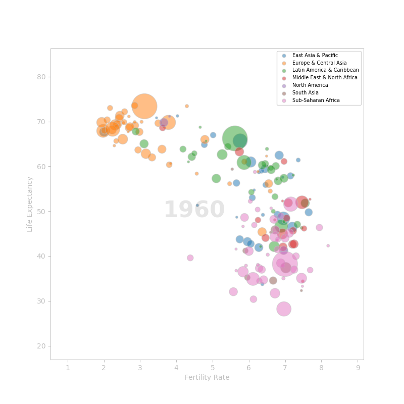
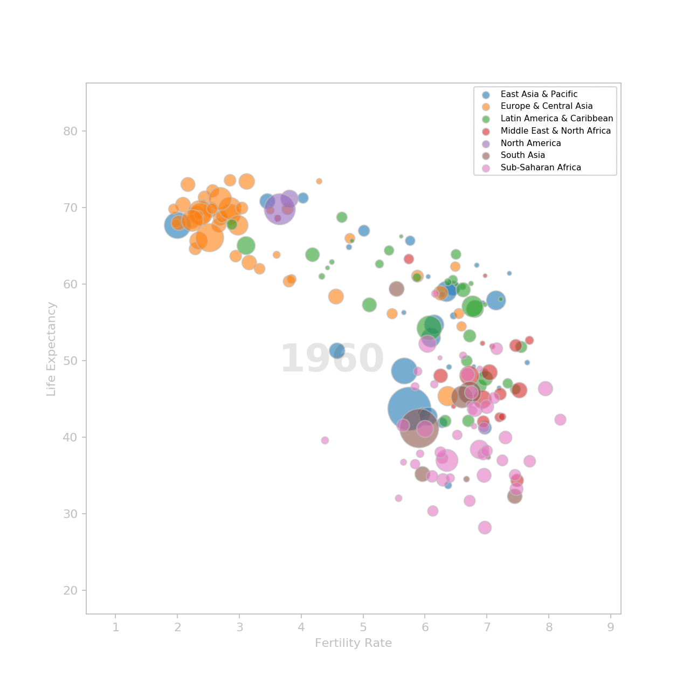

Introduction
In a TED talk titled "The best stats you've ever seen" he gave in 2006, Hans Rosling showed the audience how we can use statistics to debunk misconceptions about the world.
His talk can be seen here. It's only 20 minutes long and if you haven't seen it yet, you really should.
In this post, I am going to use Matplotlib to replicate the animation he shows at the beginning of his talk. It shows the evolution of the fertility rate and the life expectancy of countries over the years. Hans Rosling built this animation when, after testing his students on global health, he realized that they still thought that the world was divided in two:
- the western world: low fertility rate and high life expectancy
- the third world: high fertility rate and low life expectancy
There will be some differences between the original visualization and the one I am going to build:
- more data. The talk was made in 2006 with data from 1962 to 2003. I will use data from 1960 to 2016.
- regions. The original visualization has five regions. I will keep the regions from the source data (i.e. seven regions).
- colors. I can't ge the exact colors of the regions. I'll use my own color mapping.
Preparing the data
The data was downloaded from data.worldbank.org on June 28th, 2018.
- life expentancy at birth: number of years a newborn would live if the patterns of mortality at the time of birth remain the same throughout his life.
- Fertility rate: number of children a woman would give birth to during her childbearing years.
- Country population: total number of residents regardless of legal status or citizenship (midyear estimates)
The countries metadata is included in the downloaded zip files. It will be used to get the region of the countries. Countries are grouped in seven regions:
- East Asia & Pacific
- Europe & Central Asia
- Latin America & Caribbean
- Middle East & North Africa
- North America
- South Asia
- Sub-Saharan Africa
I use pandas to import the data and compile a dataframe with which I will generate the visualization.
I use numpy to execute some operations on the data.
I use pyplot and animation from matplotlib to generate the visualization.
import pandas as pd
import numpy as np
import matplotlib.pyplot as plt
import matplotlib.animation as animation
I import the data in separate dataframes:
country = pd.read_csv('country_metadata.csv')
population = pd.read_csv('country_population.csv', skiprows=4)
fertility_rate = pd.read_csv('fertility_rate.csv', skiprows=4)
life_expectancy = pd.read_csv('life_expectancy.csv', skiprows=4)
All tables have a Country Name and a Country Code column. I'll use the Country Code column as the country id to merge the datasets.
So from the country dataframe, I need only the Country Code and Region columns.
country = country[['Country Code', 'Region']]
The population, fertility_rate and life_expectancy dataframes have the same structure. I'll repeat the same process on three of them to prepare the data.
First, I remove useless columns:
population.drop(['Country Name', 'Indicator Name', 'Indicator Code',
'2017', 'Unnamed: 62'], axis=1, inplace=True)
Next, I drop the countries with missing values. I could try to fill data missing in any given year with the data from the previous or next year but some countries are missing too much if not all data.
population.dropna(axis=0, inplace=True)
The years are in columns (i.e. one column represents the data of all countries for a given year). I need year to be a variable that has its own column. To do so, I'll use the melt() method on the dataframe.
years = [str(y) for y in range(1960, 2017)]
population = pd.melt(population,
id_vars='Country Code',
value_vars=years,
var_name='Year',
value_name='Population')
At this point, the population data is ready. I preprocess the fertility_rate and the life_expectancy the same way.
When the three datasets are ready, I merge them into one dataframe.
Some countries may have data for one statistic but not the other. After merging the dataframes, I do a dropna() again to remove those cases.
df = pd.merge(country, population, how='left', on='Country Code')
df = pd.merge(df, life_exp, how='left', on=['Country Code', 'Year'])
df = pd.merge(df, fertility_rate, how='left', on=['Country Code', 'Year'])
df.dropna(axis=0, inplace=True)
The data is ready. I can now start builing the visualization.
Building the visualization
The visualization consist of a scatter plot with the fertility rate on the X axis and the life expectancy on the Y axis. The size of the markers is set by the population. The higher the population, the bigger the marker.
I group the data by region and draw one scatter plot by region.
To show an example, I am going to plot the data for the year 1960.
fig, ax = plt.subplots(figsize=(8, 8))
ax.set_xlim(df['Fertility Rate'].min() - .3,
df['Fertility Rate'].max() + .3)
ax.set_ylim(df['Life Expectancy'].min() - 2,
df['Life Expectancy'].max() + 2)
# set the regions's colors
colors = {
'Latin America & Caribbean': '#2CA02C',
'South Asia': '#8C564B',
'Sub-Saharan Africa': '#E377C2',
'Europe & Central Asia': '#FF7F0E',
'Middle East & North Africa': '#D62728',
'East Asia & Pacific': '#1F77B4',
'North America': '#9467BD'
}
# create one scatterplot per region
# I need to do like this to have all the regions
# showing up in the legend
groups = sample.groupby('Region')
for name, grp in groups:
scat = ax.scatter(grp['Fertility Rate'], grp['Life Expectancy'],
marker='o',
color=colors[name],
s=np.sqrt(sample['Population'] / 10000) * 5,
label=name,
edgecolor='silver',
alpha=.5)
# add the year in the middle of the scatter plot
# for now, the text is empty (''). Il will be filled
# in each frame
year_label = ax.text(4.5, 50, '1960', va='center', ha='center', alpha=.1,
size=32, fontdict={'weight':'bold'})
# decorate the visualization
ax.spines['bottom'].set_color('silver')
ax.spines['top'].set_color('silver')
ax.spines['right'].set_color('silver')
ax.spines['left'].set_color('silver')
ax.tick_params(
labelcolor='silver',
color='silver'
)
ax.set_xlabel('Fertility Rate', color='silver')
ax.set_ylabel('Life Expectancy', color='silver')
ax.legend(loc=1, fontsize=7, markerscale=.2)
plt.show()
Here's the result:

Animate the plot
To make the animation, we need to create one plot for each year. Each plot is a frame. Frames are shown in sequence.
Luckily, matplotlib as an animation module.
import matplotlib.animation as animation
To make the animation, I need to define a function that will set the inital state (optional) and a function that will update the plot for each frame.
But first, I need to modify a bit the script I used to build the static plot.
I create a list where I store all my scatter artists. I will iterate through that list to update each scatter plot representing a region individually. Also, I don't need to set the x and y values of the scatter plot. Finaly, I remove the size parameter from the scatter plot. It will be set for each frame.
scats = []
groups = df.groupby('Region')
for name, grp in groups:
scat = ax.scatter([], [],
marker='o',
color=colors[name],
label=name,
edgecolor='silver',
alpha=.5)
scats.append(scat)
year_label = ax.text(4.5, 50, '', va='center', ha='center', alpha=.1,
size=32, fontdict={'weight':'bold'})
The init() method that initialize the animation is very simple
def init():
for scat in scats:
scat.set_offsets([])
return scats
The set_offsets() method set the values of x and y. I want to start with an empty plot so I just pass an empty list.
Next, I define an update() method that will update the scatter plot for each frame.
For each region, the method does:
- filter the data for the current year
- set the x and y values (
set_offset()) - changes the size of the markers with the population of the year (
set_sizes()) - update the year label at the center of the figure (
set_text)
def update(year):
for scat, (name, data) in zip(scats, groups):
# get the data for the current year
sample = data[data['Year'] == year]
# set the x and y values
scat.set_offsets(sample[['Fertility Rate', 'Life Expectancy']])
# update the size of the markers with the population
# of the current year
scat.set_sizes(np.sqrt(sample['Population'] / 10000) * 5)
# update the year label displayed at the center of the figure
year_label.set_text(year)
return scats,
I am now ready to make the animation using the FuncAnimation from the animation module.
ani = animation.FuncAnimation(fig, update, init_func=init,
frames=years,
interval=200,
repeat=True)
Once the animation in done, I can show it using plt.show() or save it as a movie or an animated gif.
I am going to save it as a gif to display it on this post:
ani.save('best_stat_anim.gif', dpi=160, writer='imagemagick')
Et voilà!
